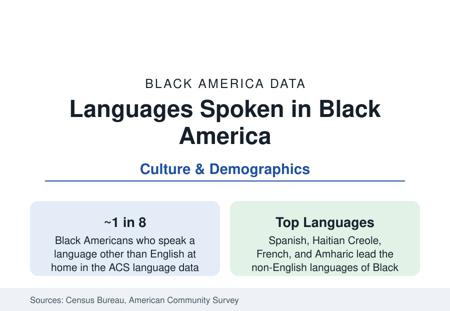

Black Census
Languages of Black America: Spanish, Creole, French, and the African Tongues
About one in eight Black Americans speaks a language other than English at home. The ACS language data behind the multilingual community.

The census asks every household what language it speaks, and Black America's answers describe a community far more multilingual than its image: roughly one in eight Black Americans speaks a language other than English at home — Spanish in the Bronx and Orlando, Haitian Creole in Miami and Brooklyn, French across the African and Caribbean diaspora, Amharic in Washington's suburbs, Yoruba and Igbo in Houston and Atlanta. The language data map the immigration files onto the dinner table. This article reports them.
Spanish: The Largest Second Language
Spanish is Black America's most-spoken second language by a wide margin in the ACS tables — the Afro-Latino population's mother tongue (the Dominican, Panamanian, Puerto Rican, Cuban, and Colombian Black communities of the foreign-born profile, whose Spanish-dominant elders and bilingual children fill the language-by-age tables) plus the Spanish spoken by U.S.-born Black Americans in the bilingual cities (New York's Black Spanish speakers are a population the size of a mid-sized city in their own right). The Dominican file is the volume: the largest Dominican communities abroad are also substantially Afro-Dominican, and their Washington Heights, Bronx, and Reading households carry Spanish through three generations at rates the language-retention data track. The institutional layer follows: Spanish-language Black media, the bilingual parishes and storefront churches, and the school systems' dual-language enrollments in the diaspora districts.
Creole and French: The Haitian and Francophone Files
Haitian Creole is the second great language of Black America — spoken in the homes of a large share of the roughly million-plus Haitian-origin population, concentrated in South Florida (Little Haiti's Creole signage is census-visible), New York, Boston, and Orlando, with its own media ecosystem (Creole radio is a South Florida institution measured in the market data) and its growing political file (Creole-language ballots and materials in Miami-Dade under the language-minority provisions). French proper forms the third stream: the francophone African diaspora (Senegalese Harlem's French and Wolof, Congolese and Cameroonian and Ivorian communities from the Bronx to Houston), Louisiana's Creole French remnant (the state's French-language census counts holding a Black Creole tradition the language programs now document as heritage), and the bilingual professionals of the African capitals' American suburbs. The Wolof, Fulani, and Mandingo of the West African communities run beneath the French in the same households — the ACS's language detail captures African languages as a fast-growing category even where its codes flatten their variety.
The African Languages and the Newest Streams
The African-language tables are the data's frontier: Amharic and Tigrinya (the Ethiopian and Eritrean suburbs of Washington, Seattle, and Los Angeles), Somali (Minneapolis's Cedar-Riverside, Columbus, Seattle), Yoruba and Igbo (Houston's and Atlanta's Nigerian professional suburbs), Swahili (the Great Lakes' refugee cities), Portuguese (the Cape Verdean Kriolu file of Providence's profile — a language the census codes within its Creole counts), and the Arabic of the Sudanese communities. Their retention profiles follow the immigrant-generations rule the ACS measures everywhere: the first generation speaks them daily, the second understands, the third inherits fragments and the heritage-language school movement (the Saturday schools and mosque and church language programs of the diaspora suburbs) pushes back at measurable scale. The refugee streams' languages arrive with the resettlement data's interpretation industry attached — the language-access files of the hospitals and courts of the refugee metros are this table's applied chapter.
English Itself: Dialect and the Record
The language file's deepest chapter is English: the African American English whose systematic grammar the linguistics literature established half a century ago (the dialect's rule-governed structure documented from Labov forward, its speakers' bidialectal competence measured in the education research, its treatment in the courts and classrooms a civil-rights file of its own — the Oakland resolution's controversy and the Ann Arbor case's ruling that a school must take the home dialect into account in teaching reading), and Gullah-Geechee, the Sea Islands' English-based Creole, the oldest African language survival in the continental data, now a documented endangered language whose speaker counts the heritage organizations track. The census cannot count dialects — its language question flattens them into 'English' — so this layer of the file belongs to the linguists' surveys, and it is where the language story began: the tongues forged in the crossing, still spoken from the Lowcountry to the boardroom, beneath the notice of the form.
Reading the Language Data
One in eight Black households conducts its life partly in another language, and the share rises every year the immigration files compound. The language tables are the census's quiet proof that Black America is a diaspora with a mail route — Spanish and Creole, Wolof and Amharic, Gullah and the King's English's Black American heir — spoken tonight in kitchens the survey counts in forty languages and one people.
More in Black Census
The Black Population of the United States: Size, Definitions, and Distribution
The Black population of the United States totals 52.8 million — 15.4 percent of the nation. How the Census Bureau defines and counts the population, and where it lives.
Black Median Household Income in the United States
Black median household income stands at $56,490 in the Census Bureau's annual income report — how the figure is measured, how it compares, and what drives it.
The Black Poverty Rate: Levels, Children, and the Long Trend
The official Black poverty rate is 17.1 percent — against 11.1 percent nationally and 7.7 percent for non-Hispanic White Americans. How poverty is measured and what the data show.
Source: U.S. Census Bureau, American Community Survey language and nativity data; Pew Research Center Hispanic and immigrant studies; Census Bureau language reports.